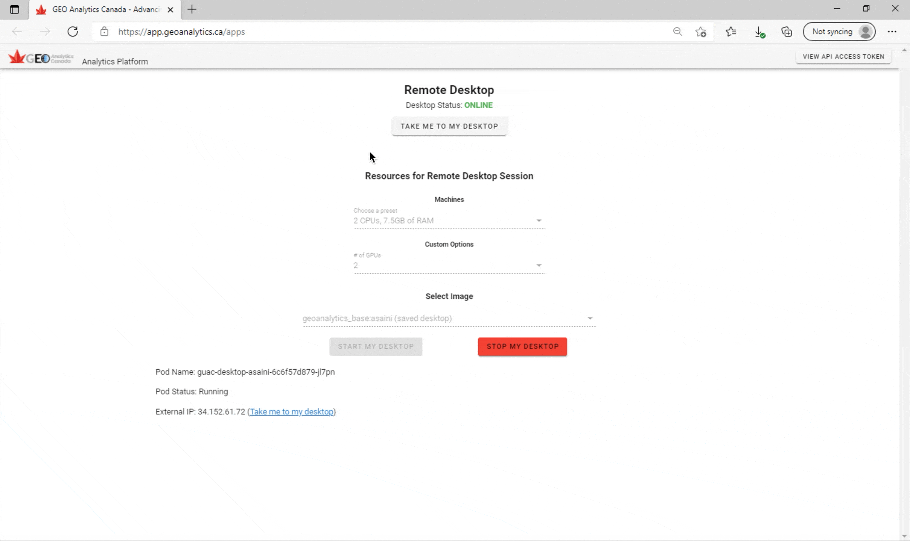
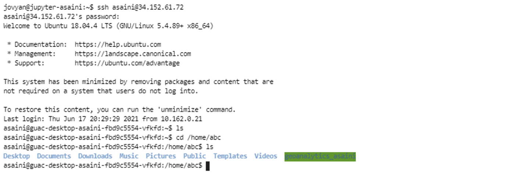
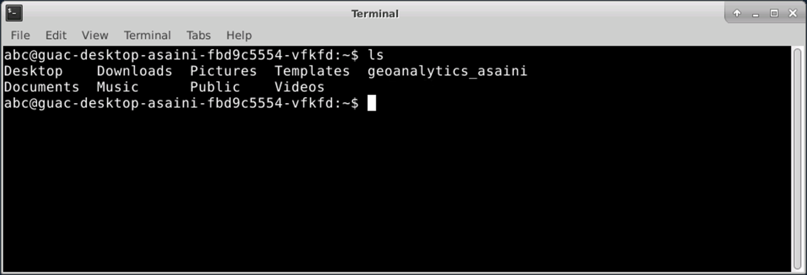
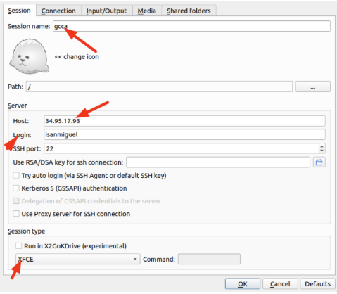
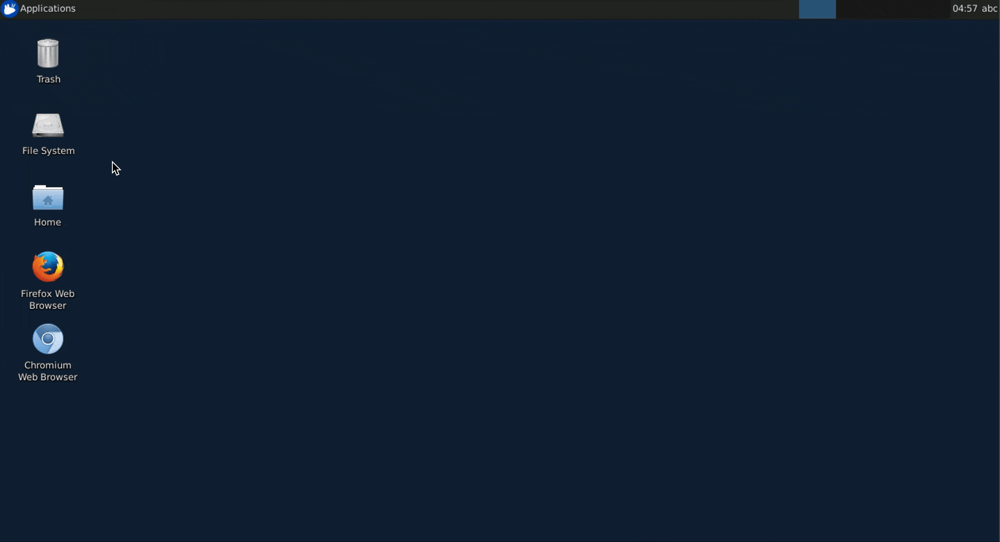
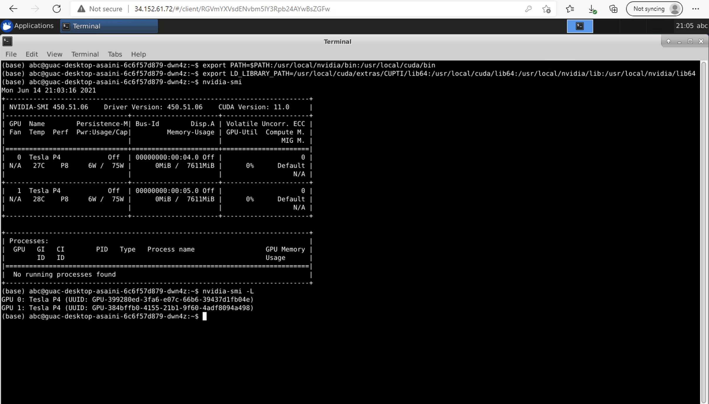
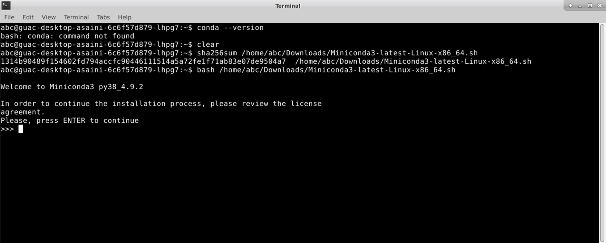
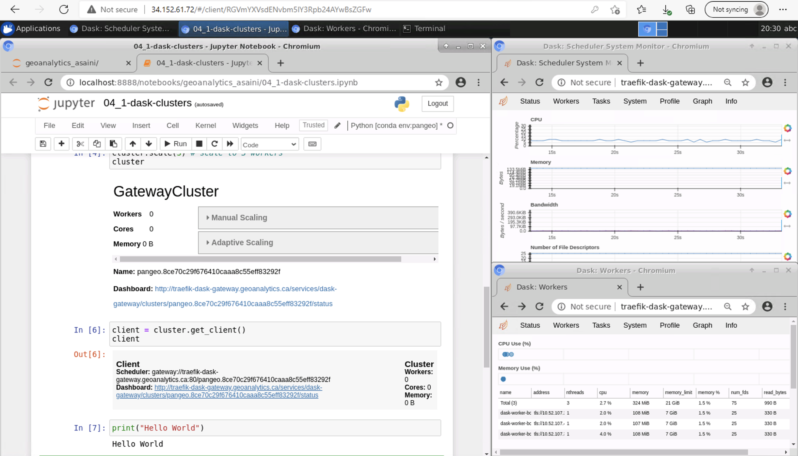
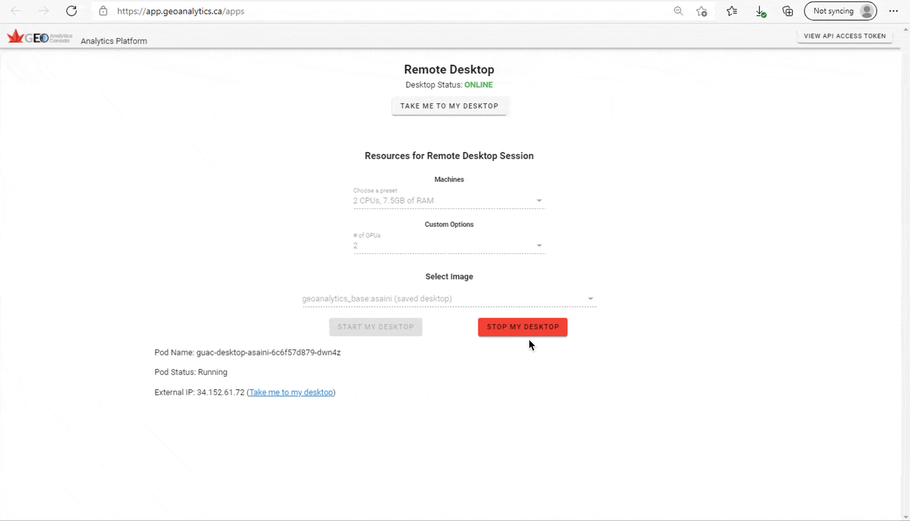

Desktop VM’s#
The GEOAnalytics platform provides space to create your own personal Ubuntu desktop environments and makes these desktops available through a web browser. The ‘desktops in a browser’ means users can use Ubuntu desktop applications to explore platform data, develop applications and conduct analytics without needing to download data to a local PC. The Ubuntu desktops are customizable but pre-configured with applications such as the Sentinel Application Toolbox (SNAP), and Quantum GIS for geospatial data viewing and analysis.
1. Starting a Remote Desktop Session#
1.1 Desktop Options#
The Desktop VM available on our Platform contains the Ubuntu operating system, with multiple options for the machine type and quantity of GPUs to choose from.
Here’s a table displaying the preset options for the machine type:
CPUs |
RAM Size |
|---|---|
1 |
3.75 GB |
2 |
7.5 GB |
4 |
15 GB |
8 |
30 GB |
16 |
60 GB |
32 |
120 GB |
There are 4 options for the Number of GPUs: 0, 1, 2, or 4.
You can also select the desktop image if you have an existing image from a previous session saved. (Otherwise, there will only be one option available)
Now, let’s access the Remote Desktop VM by selecting the “Desktop Apps” tab from the main platform dashboard, which will lead to https://app.geoanalytics.ca/apps. From here, you get the options as mentioned above to customize your virtual machine. Select the presets depending on your own preference and click on the button “START MY DESKTOP”. This will send a request to Google for access to that Desktop.

Note the three labels at the bottom: The Pod Name indicating the name of the virtual machine you are assigned, the Pod Status indicating whether the virtual machine is running or not, and the External IP address where the virtual machine is running. Before starting up your first desktop session, all these three will be empty.
There are two ways to start up your Remote Desktop session, let’s take a look at both these methods.
1.2 Login to Remote Desktop VM through Browser#
The first way is to log in through the Brower by clicking on the “TAKE ME TO MY DESKTOP” button once the desktop server is running. This will open a new tab to Apache Guacamole which is a clientless remote desktop gateway. Enter in your GEOAnalytics Canada username and password to open the Desktop VM in a new browser.

1.3 Login To Remote Desktop VM through SSH#
Another way to login is by the Secure Shell Protocol (SSH). You can SSH into the remote desktop directly from the terminal. SSH is useful because it does not load the entire Virtual machine interface, which is great for just executing codes and terminal commands and when it is not neccesary to launch applications.
Any GEOAnalytics user can SSH into their remote server directly from the terminal window.
Run the command ssh <username>@<host> in your terminal, where the username represents your GEOAnalytics Canada username and the host refers to the computer you want to access which in our case is the External IP Address. After running the command, you will be required to input your GEOAnalytics Canada password. Below is an image capturing the connection to the remote desktop.

If you notice in the image above, a few commands are used to check which directory ssh connects us to and to change directory into the same path as the Browser version.
The terminal opened in the Browser Desktop VM, the initial file path is /home/abc, so the path in the ssh connection was adjusted to the same path.

Note: SSH and Browser both have access to root privileges.
1.4 Connect to Remote Desktop through Clients#
Rather than using the Remote Desktop web browser, you can connect to a client for easy usability. Using Remote Desktop Clients is much smoother and allows the same accessibility.
Here we’ll show you how to set up X2Go to connect to a Remote Desktop going forward:
Step1: In the terminal you used to access the Virtual Machine, run this line of code : sudo apt install x2goserver
Step2: - Linux: On your local machine run the following code to install the X2Go client: sudo apt-get install x2goclient - Windows: Follow the link for X2Go in this cell, download and run the X2Go client installer relevant to your operating system. - MAC: Same instructions as Windows.
Step3: Open the X2Go Client. Under Host input the IP Address of the Remote Desktop Machine you are trying to access.
Step4: In Login input your geoanalytics Canada username.
Step5: Make sure that the drop-down menu in the Session Type box is set to XFCE.
Step6: Input your geoanalytics password when asked for it.

Here are the links to a few RDP Clients you can use:
Remmina: https://remmina.org
2. The Remote Desktop Environment#
2.1 Data Structure in the Desktop VM#
To allow for easy access to EO datasets available on the platform, EO data stores have been mounted into each user’s desktop environment. The pre-configured data access and storage mount points are the same folders mentioned in previous tutorials.
gcp-public-data-landsat - Landsat data as provided by Google’s public data program. (Read-only)
gcp-public-data-sentinel-2 - Sentinel-2 data as provided by Google’s public data program. (Read-only)
geoanalytics_data - EO data collections available to all users of GEOAnalytics. T(Read-only)
geoanalytics_user_shared_data - All platform EO data collections including raw datasets and pre-processed datasets. (Read and write for all GEOAnalytics Canada users)
geoanalytics_{username} - A user’s personal network file system where only the logged in user can read or write to their own personal storage directory.
In the desktop environment, the first 4 folders can be accessed from the File System devices tab, while the user’s private folder can be found in the ‘/home/abc’ directory.

2.2 Showing information about GPUs#
To understand the GPUs (Graphic Processing Unit) being used in the Desktop server, nvidia-smi command line tools can be used because the GPUs used in the Desktop VMs are “NVIDIA Tesla P4.” It is the NVIDIA System Interface which helps manage and monitor the NVIDIA GPU devices.
To execute the “nvidia-smi” commands, we must first export the paths into the directory’s .bashrc file. Run the two commands below in the Desktop’s terminal to enable the nvidia-smi command:
export PATH=$PATH:/usr/local/nvidia/bin:/usr/local/cuda/binexport LD_LIBRARY_PATH=/usr/local/cuda/extras/CUPTI/lib64:/usr/local/cuda/lib64:/usr/local/nvidia/lib:/usr/local/nvidia/lib64
Now, you can run the nvidia-smi commands to get information and manage the GPU devices. Here are a few below:
nvidia-smi: To display basic information of all the GPUs.nvidia-smi -L: To list all available NVIDIA devices.nvidia-smi -i 0 -q: To list all available data on a particular GPU, specify the ID of the card with -i (ID is 0).

One thing to note is that the “export PATH” commands only enables the nvidia-smi commands temporarily, for the current terminal session. This means that once you close the terminal window and open a new terminal, you will need to run those commands again. To avoid this tedious task for everytime you open a new terminal session, we can append the two commands to the Bash Shell Script, .bashrc file by executing the two commands below in terminal and enable the nvidia-smi commands for
the entire Desktop session:
echo 'export PATH=$PATH:/usr/local/nvidia/bin:/usr/local/cuda/bin' >> ~/.bashrcecho 'export LD_LIBRARY_PATH=/usr/local/cuda/extras/CUPTI/lib64:/usr/local/cuda/lib64:/usr/local/nvidia/lib:/usr/local/nvidia/lib64' >> ~/.bashrc
For more queries and commands to manage the system’s GPU devices, take a look at these websites below:
3. Working in the Desktop VM#
3.1 Installing Software using APT-GET#
Within the Desktop environment, you can install any software or application you require for your projects. Let’s install the Syder IDE (Integrate Development Environment, an open-source Python IDE that’s optimized for data science workflows and well-equipped with Python data science libraries like SciPy, NumPy, and Matplotlib.
We will be using apt-get which is the command-line tool for handling packages and provides functions such as installing, removing, and updating packages on Linux systems.
First we must execute the
sudo apt-get updatecommand which is used to download package information from all configured sources.The, run the command
sudo apt-get install spyderin terminal to install Spyder on your Desktop Server.Then type the command
spyderto open and run the application.
3.2 Installing Miniconda#
Miniconda is an mini-installer, a smaller version of Anaconda containing only conda, its dependencies, and Python. Check by running conda --version to see if Miniconda is already available in your virtual machine. If it returns a conda version, then you don’t need to install it!
Now since we are working with a Linux Operating System, use the Installation Guide for Linux provided by the Conda Documentation to properly install the environment manager. https://docs.conda.io/projects/conda/en/latest/user-guide/install/linux.html
Here is a quick screenshot capturing the steps to install within the Desktop server. 
3.3 Setting up the Python Environment#
The Desktop Virtual Machine does not have the notebook environment set-up already as it is in JupyterHub, so to be able to use all the packages configured as in JupyterHub, you can recreate the environment with the following steps:
Get the Jupyterhub API token by opening a terminal on lab.geoanalytics.ca and run the following command:
echo $JUPYTERHUB_API_TOKEN. This will return a token to be used for the next step.Within the remote desktop system, run the following command in the terminal.
export JUPYTERHUB_API_TOKEN=result from previous commandCreate the JupyterHub environment by copying the “environment.yml” file into
/home/abc/folder of the Desktop VM, then running the following commands to create and activate the environment.conda env create -f environment.ymlconda activate pangeo
Congratulations! You now have pangeo environment running in your Desktop server.
3.4 Launching Dask Clusters#
Once you’re in the Conda environment created above, you can work on your projects on the Desktop with access to all the same packages as Jupyter. Let’s perform a small task of creating a Dask cluster within the environment, similar to the exercises from the Jupyter Notebook.
First execute the command jupyter notebook within terminal to launch a Python notebook where you can run you Dask clusters from. Now open the 04_1-dask-clusters.ipynb jupyter notebook which contains code for creating a Dask cluster. Follow along with the notebook until the exercise points back to this section.

For the next step, we will see if we can connect to the Dask cluster, created in the Desktop VM, in this notebook. First import the Dask Gateway.
[2]:
from dask_gateway import Gateway
gateway = Gateway("http://traefik-dask-gateway.geoanalytics.ca/services/dask-gateway/", auth="jupyterhub")
Next, we will connect to the cluster according to its name. If you are unsure of the active clusters’ names, you can list them using the built-in gateway.list_clusters() function.
[6]:
clusters = gateway.list_clusters()
clusters
[6]:
[ClusterReport<name=pangeo.298fa41b3c6a48bca9ca45fff3671685, status=RUNNING>]
[7]:
cluster = gateway.connect(clusters[0].name) #connecting by the 'name' key
cluster
[ ]:
client = cluster.get_client()
client
If you were able to run through the cells above, then you successfully connected to an existing Dask cluster! Make sure to shut down the cluster when you’re done working with it!
3.2 Using Applications#
Applications can be opened and used for geospatial data analysis. As an exercise, launch the Quantum GIS (QGIS) application, initialize a new project, and load files from one of the folders we have previously explored.

4. Closing the Remote Desktop Session#
At the end of your session, always make sure to terminate the desktop server to save resources.
There are two options when terminating, whether you would like to save the current session or disconnect without saving any work.
By saving your session, the following actions will occur:
A new image will be created for future use with the remote desktop.
Everything in the remote desktop will be saved except for any docker images/containers.
Saving your remote desktop session can take up to 20 minutes.
Your desktop will be terminated.
By not saving your session, the following actions will occur:
Anything done during your current remote desktop session will not be saved, except for data written to your personal storage directory (/home/abc/geoanalytics_{username}) or to certain mount points (mounted object stores). Any applications installed will not be saved.
Your desktop will be terminated.
